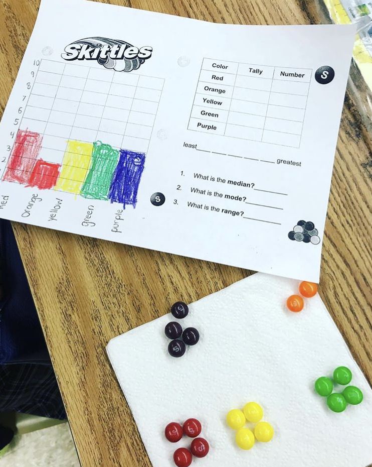

For this data and measurement unit, I gave each student a small bag of skittles and the student had to record and graph the results. The student was responsible for identifying the mean, median, range and mode of their unique data set. This activity allowed students to collect, organize, analyze and synthesize data in a meaningful way and they were rewarded with a nice treat!
